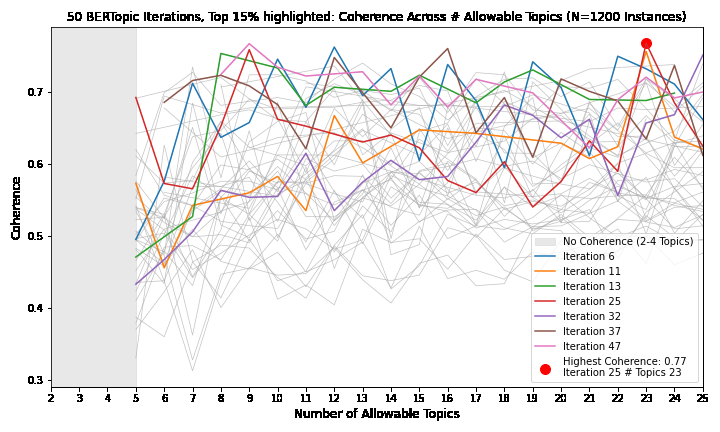

¹Department of Kinesiology and Health Education, The University of Texas at Austin, Austin, TX, USA
Correspondence: jethomasphd@gmail.com
Public health surveillance of social media requires converting large volumes of unstructured text into a small set of interpretable, analyzable themes. Transformer-based topic models such as BERTopic automate topic discovery, but two bottlenecks remain: topic interpretation, which is subjective and vulnerable to researcher bias, and corpus-scale classification, which is required before themes can enter statistical models. We present a five-stage, human-in-the-loop pipeline that addresses both bottlenecks. Stage 1 discovers topics with BERTopic under randomized hyperparameter search, evaluating 1,200 candidate models and selecting the configuration that maximizes cv coherence. Stage 2 interprets each topic democratically: a large language model (GPT-4o) is queried 5,000 independent times per topic and the modal label is adopted, stabilizing stochastic outputs and buffering the a priori expectations a human labeler may hold. Stage 3 synthesizes topics into higher-order themes through a structured two-researcher consensus protocol grounded in the Theme and Topic system. Stage 4 classifies every document into the resulting theme taxonomy using an LLM prompt benchmarked against 250 human-labeled documents (>85% agreement) and piloted against a Boolean dictionary alternative. Stage 5 carries theme classifications into downstream statistics, including proportional z-tests, LIWC psycholinguistic profiling, and cross-lagged panel models. We demonstrate the pipeline on 5,872 alcohol-brand tweets posted before, during, and after the initial COVID-19 lockdowns, where it identified five marketing themes at a coherence of 0.768 and scaled to classify 486,786 user-generated tweets. All prompts are released verbatim, and complete materials are provided for reproduction: archival implementations of every computational stage, the full psycholinguistic profile output, and a maintained end-to-end pipeline written against the current OpenAI SDK.
Keywords: topic modeling; BERTopic; large language models; text classification; human-in-the-loop; infodemiology; public health surveillance
Social media platforms generate continuous, population-scale records of marketing activity, health discourse, and crisis communication. Twitter (now X) in particular offers real-time, extensive data from diverse users and has proven valuable for sociological research (Murthy, 2018), and it served as a primary channel for information exchange during the COVID-19 pandemic (Haman et al., 2020; Rufai et al., 2020). The surveillance value of such data, however, depends on a difficult conversion: reducing hundreds of thousands of short, noisy documents to a small number of coherent themes whose prevalence can be measured, compared across time, and entered into inferential models.
Topic models automate the discovery half of this conversion. Classical approaches such as latent Dirichlet allocation identify statistically derived patterns of word co-occurrence (Blei et al., 2003), and topic modeling has been advanced as a means of reviewing text corpora at scales beyond manual capacity (Nunez-Mir et al., 2016). Transformer-based successors, most prominently BERTopic (Grootendorst, 2022), combine dense sentence embeddings with density-based clustering and class-based TF-IDF term weighting, producing coherent topics on short, heterogeneous documents such as tweets (Egger & Yu, 2022). Two human bottlenecks nonetheless remain. First, a topic is only an array of representative words; assigning it meaning is an interpretive act that qualitative methodology has long recognized as vulnerable to researcher expectations (Braun & Clarke, 2006; Nowell et al., 2017). Second, once themes are defined, every document in the corpus must be classified into the taxonomy before prevalence can be estimated or modeled, a task whose volume forecloses manual coding.
The Theme and Topic system (Gillies et al., 2022) formalizes the division of labor for the first bottleneck: topics are statistically derived patterns found autonomously by computation, while themes are meaningful patterns that emerge through human interpretation, and the two proceed in parallel so that machine learning augments rather than replaces human insight. Large language models (LLMs) open new options on both fronts. Preliminary work indicates that LLMs can label topics robustly and, notably, without the anchoring bias a human coder with an a priori hypothesis may introduce (Li et al., 2023; Chae & Davidson, 2023), and a recent survey documents strong LLM performance across text classification tasks (Fields et al., 2024). Applied precedent exists in public health surveillance: coherence-scored BERTopic modeling has been used to identify e-cigarette marketing content on social media (Lee et al., 2024).
This paper contributes a complete, reproducible pipeline that integrates these elements and extends them in one specific way: interpretation by democratic LLM ensemble. Rather than accepting a single stochastic LLM label per topic, the pipeline queries the model thousands of independent times and adopts the modal answer, treating topic naming as an estimation problem with a central tendency rather than a one-shot generation. The full pipeline comprises (1) coherence-optimized topic discovery via randomized hyperparameter search over the joint UMAP, HDBSCAN, and topic-count space; (2) democratic LLM interpretation of each topic; (3) a structured human-in-the-loop synthesis stage that preserves qualitative accountability; (4) validated corpus-scale LLM classification that bridges themes to statistics; and (5) downstream analyses, including proportional z-tests, Linguistic Inquiry and Word Count (LIWC) psycholinguistic profiling (Boyd et al., 2022), and cross-lagged panel modeling (Kuiper & Ryan, 2018). We demonstrate the pipeline on alcohol-industry marketing surveillance during the COVID-19 pandemic, where downstream interpretation was framed by the Differential Susceptibility to Media Effects Model (Valkenburg & Peter, 2013), although the pipeline itself is theory-agnostic. Complete code is released as supplementary material.
Documents are prepared with a conventional natural language processing sequence implemented in Python 3.9.12 (Python Software Foundation, 2022) using NLTK (Bird et al., 2009): removal of non-alphabetic characters, conversion to lowercase, tokenization, lemmatization, and removal of stopwords. The stopword list combines NLTK's standard English list with a custom domain-specific list; in the demonstration case this included brand terms that appear ubiquitously in the corpus (e.g., budlight) and temporal references common on Twitter but uninformative of topics (e.g., am, pm, weekday and month names). Domain stopwords are the analyst's first, and deliberately transparent, modeling decision: they should be enumerated in supplementary material. The demonstration list — the eleven brand names and standard temporal terms — is released with the Stage 1 code supplement as its expected custom_stopwords input.
Topic discovery uses BERTopic (Grootendorst, 2022) with five components: (i) sentence embedding with the SentenceTransformer model all-MiniLM-L6-v2, selected for its balance of performance and computational efficiency (Wang et al., 2020); (ii) dimensionality reduction with Uniform Manifold Approximation and Projection (UMAP; McInnes et al., 2018) under the cosine metric; (iii) clustering with HDBSCAN (Campello et al., 2013) using excess-of-mass cluster selection, chosen for its robustness to noise and to clusters of varying density; (iv) topic extraction by class-based TF-IDF (Ramos, 2003); and (v) topic reduction to merge similar and remove less coherent topics (Grootendorst, 2022).
Rather than fixing hyperparameters, the pipeline searches the joint configuration space by random sampling (Bergstra & Bengio, 2012). In the reference implementation, 50 iterations each draw UMAP parameters (n_neighbors from 5–35, n_components from 3–10, min_dist from 0.01–0.5) and HDBSCAN parameters (min_cluster_size from 5–35), and each sampled configuration is evaluated across maximum topic solutions from 2 to 25, yielding 1,200 candidate models. Every model is scored with the cv coherence measure from Gensim's CoherenceModel (Röder et al., 2015), selected because coherence correlates with human interpretability of topics (Newman et al., 2010) and has precedent in social media surveillance of tobacco marketing (Lee et al., 2024). The configuration and topic number maximizing coherence become the final topic model; the implementation persists, for every iteration, the hyperparameters, the topics with representative words, an intertopic distance visualization, and a topic similarity matrix, so that model selection is fully auditable.
The principal output of the topic model is, for each topic, an array of representative words that must be synthesized into an understandable name (e.g., a hypothetical array of "teacher, student, classroom, math, history, science" synthesizes to "education"). The pipeline delegates this synthesis to GPT-4o (OpenAI, 2024) under a democratic protocol: the OpenAI API is prompted to name the topic given the domain context and the representative words, the query is repeated 5,000 independent times per topic, and the label with the most "votes" is selected. In the reference implementation each query decodes a single completion at temperature 0.5 with a 15-token maximum, and failed calls are retried up to five times under exponential backoff; the prompt is given verbatim in section 2.7. Preliminary research suggests LLM topic labeling is robust and particularly good at naming topics without the inherent bias that may result from a human with an a priori hypothesis assigning the labels (Li et al., 2023). The ensemble extends that logic: because decoding is stochastic, any single response is a draw from a distribution over plausible labels; plurality voting over a large number of draws estimates the distribution's mode instead of gambling on one sample. The vote tally itself is informative diagnostics — a fragmented vote signals a semantically ambiguous topic that deserves closer human scrutiny in Stage 3.
Following the Theme and Topic system (Gillies et al., 2022), machine-derived topics and their modal LLM labels are then synthesized into higher-order themes by human interpretation under a structured two-researcher protocol. The primary researcher reviews the BERTopic output, samples tweets mapped to each topic, confirms that the modal LLM interpretation is relevant to the sampled documents, and identifies overlapping thematic connections between topics, reading all materials against the current literature of the target domain. Topics are grouped by conceptual similarity into candidate themes — in the demonstration case, for example, the topics "Virtual NFL Draft Party with Celebrity Hosts" and "Home Sports Challenge Campaigns" grouped into a single Sports theme. The senior researcher independently reviews and critiques the proposed interpretations, and consensus is reached through discussion. This stage keeps a named human analyst accountable for every theme while confining human labor to the low-volume, high-judgment portion of the task, in alignment with recommendations from the Theme and Topic system and with established practice (Gillies et al., 2022; Lee et al., 2024).
Prevalence estimation requires that every document receive exactly one label from the theme taxonomy (including "not belonging to any theme"). The pipeline pilots two candidate classifiers and scales whichever performs better against a benchmark of 250 human-labeled documents. The first candidate is a rule-based Boolean classifier that maps documents against each theme's dictionary words with logical operators (AND, OR, NOT), scoring documents containing more dictionary words as more theme-relevant. The second is an LLM classifier: a prompt instructs GPT-4o to assign a verbatim document to one option from the fixed list of themes plus "not belonging to any theme," and the procedure loops over the corpus with independent API calls, each decoding a single completion at temperature 0.5 with a 30-token maximum (OpenAI, 2024); the prompt is given verbatim in section 2.7. LLMs are well suited to this task, with recent review indicating strong performance and versatility across text classification settings (Fields et al., 2024). During prompt engineering, LLM classifications are compared with the human-labeled benchmark to ensure greater than 85% agreement before scaling. In the demonstration case the LLM classifier was selected and scaled to the full corpus.
Because Stage 4 yields a label for every document, theme prevalence within any partition of the corpus is directly computable, and the pipeline terminates in whatever statistics the research design requires. Three downstream analyses are packaged in the reference implementation. First, proportional z-tests compare theme prevalence across time periods, with Bonferroni correction proportional to the number of themes multiplied by the number of tests per theme (Bland & Altman, 1995). Second, each theme's concatenated corpus is profiled with LIWC-22 (Chung & Pennebaker, 2012; Boyd et al., 2022), whose empirically constructed dictionaries quantify cognitive, emotional, and excitative dimensions of language (Tausczik & Pennebaker, 2010); in media effects applications these profiles map onto the response states of the Differential Susceptibility to Media Effects Model (Valkenburg & Peter, 2013). Third, per-account counts of theme-classified documents can serve as variables in longitudinal models; the reference implementation feeds them into cross-lagged panel models estimated by generalized structural equation modeling (Kuiper & Ryan, 2018; Rabe-Hesketh et al., 2022; StataCorp, 2021), permitting mixed continuous and binary variables. The pipeline is thus a measurement instrument whose output plugs into standard epidemiologic and communication-science designs.
Because label distributions can shift across model versions, the prompts are a measurement instrument and are released verbatim. Both use a fixed system message and a user message assembled from the domain context and the item under evaluation; the italicized domain-context clause is the only domain-specific text in the pipeline. The Stage 2 naming prompt, issued once per vote, is:
The Stage 4 classification prompt enumerates the consensus themes from Stage 3 plus the exhaustive residual option, and instructs a verbatim response so that outputs map deterministically onto the taxonomy:
Redeploying the pipeline in a new domain therefore requires changing only the bracketed domain-context clause, the theme list produced by Stage 3, and the literature lens the Stage 3 researchers read against. Implementations should pin and report the model identifier alongside these prompts (here, GPT-4o; OpenAI, 2024).
The pipeline was developed for surveillance of alcohol-industry marketing before, during, and after the initial COVID-19 lockdowns. The corpus comprised 5,872 tweets posted by 11 prominent alcohol companies between January 2019 and July 2021, drawn from the Prevention Research Lab at UT-Austin Twitter Marketing Study (PRL-TMS), in which trained research assistants audited verified brand accounts and recorded verbatim tweet text under weekly quality-control review; the study was reviewed by the UT-Austin institutional review board and determined to be non-human-subjects research. The 11 companies were selected to span popular beverage types (beer, spirits, hard seltzer), each with at least 10,000 followers; they tweeted between 117 and 1,142 times each (mean 534, approximately 17 per month) and held nearly 1.2 million combined followers in a cross-sectional audit near the early pandemic period. Themes documented by prior pandemic-era research (e.g., isolation drinking, delivery, corporate social responsibility; Martino et al., 2021) supplied the literature lens for Stage 3.
Across the 1,200 candidate models of Stage 1, the highest-coherence configuration (0.768) used 15 UMAP neighbors, 4 components, a minimum distance of 0.01, an HDBSCAN minimum cluster size of 20, and a maximum topic solution of 23, and yielded seven topics (Figure 1). Stage 2 named the seven topics by democratic vote, and the Stage 3 protocol synthesized them into five themes: Alcohol Delivery and Isolation Drinking, Restaurant Support, Social Media Promotions, Sports, and Gaming (Table 1). In Stage 4, the LLM classifier exceeded the 85% agreement threshold against 250 human-labeled tweets and was scaled to the corpus, enabling the Stage 5 proportional z-tests (Bonferroni-corrected α = 0.0033). Three of the five themes rose significantly from the pre-pandemic to the lockdown period — Alcohol Delivery and Isolation Drinking from 9.1% to 17.4%, Restaurant Support from 1.9% to 5.5%, and Social Media Promotions from 6.6% to 16.5% (all p < 0.001) — while Sports and Gaming did not differ across periods (Table 2), and LIWC profiles differentiated emotionally-oriented from cognitively-oriented themes (Supplementary File S4); those substantive findings are reported in a companion empirical paper [citation to companion Study 1 manuscript]. The classifier subsequently scaled far beyond the discovery corpus: in a second companion study, the identical Stage 4 procedure classified 486,786 user-generated tweets from 66,303 U.S. accounts, and the resulting counts served as variables in a cross-lagged panel model of industry-to-public content dynamics [citation to companion Study 2 manuscript]. The demonstration thus exercises every stage, from raw text to inferential model, on corpora spanning three orders of magnitude.

| Theme | Constituent Topics (LLM Interpretation) | Representative Words | Example Tweets |
|---|---|---|---|
| Alcohol Delivery and Isolation Drinking | Pandemic Alcohol Delivery and Enjoyment | sunshine, drizlya, bit, day, order, happy, part, original, drink, get | "Pro tip: Put your beer in a coffee mug and no one knows you're drinking on the video conference." "Bring the beachside vibe inside with Malibu delivered to your door in 60 minutes or less Get $5 off your first order, courtesy of Drizly, with code 'Sunshine20'!" |
| Restaurant Support | COVID-19 Restaurant Support and Donation Initiatives | restaurant, donate, support, worker, help, fund, restaurantstrong, strong, covid, donation | "Yeah, we miss bars too. But we can still support restaurant and bar workers today. Order takeout
and we'll buy your first round when they reopen." "ATTENTION TWITTER: The people who serve us every day are depending on our support. Restaurants and bars, let us know that you're #OpenForTakeout, so we can spread the word." |
| Social Media Promotions | Virtual Bar Tours & Live Instagram Events | live, instagram, tune, tonight, ig, go, dive, tour, bar, edition | "Going live now! doing a little thing with @budlight tonight on IG and facebook live. come hang 6pm pst / 9pm est #divebartour" |
| Pandemic Social Engagement & Promotions | whassup, say, tag, win, merch, friend, chance, need, collection, week | "Win fresh Bud Whassup crewnecks for your happy hour crew! RETWEET + FOLLOW for the chance to outfit your crew." | |
| Sports | Virtual NFL Draft Party with Celebrity Hosts | draft, boo, commish, nfl, youtube, drafterparty, robgronkowski, guest, host, camillekostek | "TONIGHT!!!! @nfl @budlight" |
| Home Sports Challenge Campaigns | challenge, team, house, sport, league, submit, home, athlete, chance, video | "Want to win a @trulyseltzer putting mat? Show us your #dailyninesetup. Photo, video, putting, chipping, whatever. Show us." | |
| Gaming | Charity Gaming Events by Alcohol Brands | royale, twitch, tv, charity, money, tonight, dkm, therealgavinlux, snellzilla, final | "Excited to announce the Bud Light Seltzer Charity Royale. 24 pro athletes compete in Call of
Duty: Warzone to raise money for awesome local causes." "Live right now on http://Twitch.tv/BudLight. Tune in!" |
a Delivery app company, acquired by Uber.
| Theme | Pre-Pandemic Response (%) | Peri-Pandemic Response (%) | Post-Pandemic Response (%) |
|---|---|---|---|
| Alcohol Delivery and Isolation Drinking | 9.1* | 17.4† | 11.9*† |
| Restaurant Support | 1.9* | 5.5† | 1.7* |
| Social Media Promotions | 6.6* | 16.5† | 10.6*† |
| Sports | 8.2 | 11.4 | 8.9 |
| Gaming | 1.1 | 2.0 | 1.6 |
* Statistical difference from the peri-pandemic response period, p < 0.0033. † Statistical difference from the pre-pandemic response period, p < 0.0033 (Bonferroni-corrected α).
The pipeline's design responds to a specific epistemic problem in computational text analysis: the seam between statistical output and human meaning is where bias enters and where reproducibility is usually lost. Randomized, coherence-scored model selection makes the discovery stage auditable; democratic LLM interpretation converts a stochastic generation step into an estimable quantity; the two-researcher consensus protocol keeps interpretation accountable to named analysts and to the literature; and the validated classifier gives every downstream statistic a documented measurement pedigree. Each stage emits artifacts (hyperparameter logs, vote tallies, benchmark agreement) that can be published alongside findings.
Several limitations warrant acknowledgment, consistent with those recognized in the demonstration research. Synthesizing information from topic modeling and AI-generated outputs into themes retains inherent subjectivity; despite extensive iterative human-AI validation, subtle biases stemming from language complexity and contextual nuance may persist. LIWC's dictionary-based approach may overlook nuanced meanings better captured by alternative sentiment methods, and its profiles here are descriptive rather than inferential. The interpretation and classification stages depend on a closed-weight commercial model; label distributions may shift across model versions, so implementations should pin and report the model identifier, release all prompts verbatim, and retain vote tallies and benchmark sets so that future replications can quantify drift. The 5,000-query ensemble and corpus-scale classification also carry nontrivial API cost, which practitioners can tune by monitoring the stability of the modal label as votes accumulate. Finally, the 85% human-agreement threshold, while consistent with applied precedent, is a design choice that should be justified against the error tolerance of the downstream analysis.
The framework generalizes directly. Because every stage is domain-agnostic — only the domain context sentence in the prompts and the literature lens of Stage 3 change — the same pipeline can surveil marketing by other consumer-product industries, discourse on other platforms, and communication during other societal disruptions such as elections or natural disasters. In public health specifically, it offers an innovative instrument for ongoing surveillance of commercial messaging: capable of detecting what an industry is saying, how its language is constructed, and, when paired with longitudinal designs, how that messaging moves through the public.
Complete materials are provided as supplementary files. S1, S2, and S3 are the archival implementations of the computational stages exactly as executed in the source research — S1, BERTopic optimization with randomized hyperparameter search and coherence-based model selection; S2, democratic LLM topic naming; S3, corpus-scale LLM classification — released as plain text for archival transparency, with S2 and S3 written against the openai==0.27.0 API and annotated accordingly. S4 is the complete LIWC-22 output for all five theme corpora (117 variables per corpus), from which the Stage 5 psycholinguistic profiles derive. Because the legacy OpenAI interface has since been retired, the supplements are accompanied by a maintained working pipeline — configuration, the five stage scripts, an orchestrator, and a synthetic-data generator for cost-free smoke testing — written against the current OpenAI SDK with identical prompts, decoding parameters, and search spaces, a seeded hyperparameter search, and an enforced benchmark-agreement gate before corpus-scale classification. Each stage emits its audit artifacts (hyperparameter logs, vote ballots and tallies, benchmark reports, test results) so that any deployment can publish its measurement pedigree alongside its findings. A browser-based implementation of the full pipeline, which runs client-side with the user's own LLM API key, accompanies this preprint.
Bergstra, J., & Bengio, Y. (2012). Random search for hyper-parameter optimization. Journal of Machine Learning Research, 13(2). https://www.jmlr.org/papers/volume13/bergstra12a/bergstra12a.pdf
Bird, S., Klein, E., & Loper, E. (2009). Natural language processing with Python. O'Reilly Media, Inc. https://www.nltk.org/book/
Bland, J. M., & Altman, D. G. (1995). Multiple significance tests: the Bonferroni method. BMJ, 310, 170. https://doi.org/10.1136/bmj.310.6973.170
Blei, D. M., Ng, A. Y., & Jordan, M. I. (2003). Latent dirichlet allocation. Journal of Machine Learning Research, 3, 993–1022. https://www.jmlr.org/papers/volume3/blei03a/blei03a.pdf
Boyd, R. L., Ashokkumar, A., Seraj, S., & Pennebaker, J. W. (2022). The development and psychometric properties of LIWC-22. Austin, TX: University of Texas at Austin, 1–47. https://www.liwc.app/static/documents/LIWC-22%20Manual%20-%20Development%20and%20Psychometrics.pdf
Braun, V., & Clarke, V. (2006). Using thematic analysis in psychology. Qualitative Research in Psychology, 3(2), 77–101. https://doi.org/10.1191/1478088706qp063oa
Campello, R. J., Moulavi, D., & Sander, J. (2013, April). Density-based clustering based on hierarchical density estimates. In Pacific-Asia conference on knowledge discovery and data mining (pp. 160–172). Berlin, Heidelberg: Springer. https://doi.org/10.1007/978-3-642-37456-2_14
Chae, Y., & Davidson, T. (2023). Large language models for text classification: From zero-shot learning to fine-tuning. Open Science Foundation. https://doi.org/10.31235/osf.io/sthwk
Chung, C. K., & Pennebaker, J. W. (2012). Linguistic inquiry and word count (LIWC): pronounced "Luke,"… and other useful facts. In Applied natural language processing: Identification, investigation and resolution (pp. 206–229). IGI Global. http://doi.org/10.4018/978-1-60960-741-8.ch012
Egger, R., & Yu, J. (2022). A topic modeling comparison between LDA, NMF, Top2Vec, and BERTopic to demystify twitter posts. Frontiers in Sociology, 7, 886498. https://doi.org/10.3389/fsoc.2022.886498
Fields, J., Chovanec, K., & Madiraju, P. (2024). A survey of text classification with transformers: How wide? how large? how long? how accurate? how expensive? how safe? IEEE Access, 12, 6518–6531. https://doi.org/10.1109/ACCESS.2024.3349952
Gillies, M., Murthy, D., Brenton, H., & Olaniyan, R. (2022). Theme and Topic: How qualitative research and topic modeling can be brought together. arXiv. https://arxiv.org/abs/2210.00707
Grootendorst, M. (2022). BERTopic: Neural topic modeling with a class-based TF-IDF procedure. arXiv preprint arXiv:2203.05794. https://doi.org/10.48550/arXiv.2203.05794
Haman, M. (2020). The use of Twitter by state leaders and its impact on the public during the COVID-19 pandemic. Heliyon, 6(11). https://doi.org/10.1016/j.heliyon.2020.e05540
Kuiper, R. M., & Ryan, O. (2018). Drawing conclusions from cross-lagged relationships: Re-considering the role of the time-interval. Structural Equation Modeling, 25(4), 809–823. https://doi.org/10.1080/10705511.2018.1431046
Lee, J., Ouellette, R. R., Murthy, D., Pretzer, B., Anand, T., & Kong, G. (2024). Identifying e-cigarette content on TikTok: Using a BERTopic modeling approach. Nicotine & Tobacco Research, ntae171. https://doi.org/10.1093/ntr/ntae171
Li, D., Zhang, B., & Zhou, Y. (2023, July 21). Can Large Language Models (LLM) label topics from a topic model? SocArXiv. https://doi.org/10.31235/osf.io/23x4m
Martino, F., Brooks, R., Browne, J., Carah, N., Zorbas, C., Corben, K., Saleeba, E., Martin, J., Peeters, A., & Backholer, K. (2021). The nature and extent of online marketing by Big Food and Big Alcohol during the COVID-19 pandemic in Australia: Content analysis study. JMIR Public Health and Surveillance, 7(3), e25202. https://doi.org/10.2196/25202
McInnes, L., Healy, J., & Melville, J. (2018). UMAP: Uniform manifold approximation and projection for dimension reduction. arXiv preprint arXiv:1802.03426. https://doi.org/10.48550/arXiv.1802.03426
Murthy, D. (2018). Twitter: Social communication in the twitter age (2nd ed.). Polity Press. http://lccn.loc.gov/2017031442
Murthy, D. (2024). Sociology of Twitter/X: Trends, challenges, and future research directions. Annual Review of Sociology, 50. https://doi.org/10.1146/annurev-soc-031021-035658
Newman, D., Lau, J. H., Grieser, K., & Baldwin, T. (2010, June). Automatic evaluation of topic coherence. In Human Language Technologies: The 2010 Annual Conference of the North American Chapter of the ACL (pp. 100–108). https://aclanthology.org/N10-1012.pdf
Nowell, L. S., Norris, J. M., White, D. E., & Moules, N. J. (2017). Thematic analysis: Striving to meet the trustworthiness criteria. International Journal of Qualitative Methods, 16(1). https://doi.org/10.1177/1609406917733847
Nunez-Mir, G. C., Iannone III, B. V., Pijanowski, B. C., Kong, N., & Fei, S. (2016). Automated content analysis: addressing the big literature challenge in ecology and evolution. Methods in Ecology and Evolution, 7(11), 1262–1272. https://doi.org/10.1111/2041-210X.12602
OpenAI. (2024). API Models. https://platform.openai.com/docs/models/overview
Python Software Foundation. (2022). Python (version 3.9.12). https://www.python.org/
Rabe-Hesketh, S., & Skrondal, A. (2022). Multilevel and longitudinal modeling using Stata: Volume II: Categorical responses, counts, and survival (4th ed.). Stata Press. https://www.stata.com/bookstore/multilevel-longitudinal-modeling-stata/
Ramos, J. (2003, December). Using tf-idf to determine word relevance in document queries. In Proceedings of the First Instructional Conference on Machine Learning (Vol. 242, No. 1, pp. 29–48).
Röder, M., Both, A., & Hinneburg, A. (2015, February). Exploring the space of topic coherence measures. In Proceedings of the Eighth ACM International Conference on Web Search and Data Mining (pp. 399–408). https://doi.org/10.1145/2684822.2685324
Rufai, S. R., & Bunce, C. (2020). World leaders' usage of Twitter in response to the COVID-19 pandemic: a content analysis. Journal of Public Health, 42(3), 510–516. https://doi.org/10.1093/pubmed/fdaa049
StataCorp. (2021). Stata Statistical Software: Release 17. StataCorp LLC. https://www.stata.com
Tausczik, Y. R., & Pennebaker, J. W. (2010). The psychological meaning of words: LIWC and computerized text analysis methods. Journal of Language and Social Psychology, 29(1), 24–54. https://doi.org/10.1177/0261927X09351676
Valkenburg, P. M., & Peter, J. (2013). The differential susceptibility to media effects model. Journal of Communication, 63(2), 221–243. https://doi.org/10.1111/jcom.12024
Wang, W., et al. (2020). all-MiniLM-L6-v2 [Pretrained transformer model]. Hugging Face. https://huggingface.co/sentence-transformers/all-MiniLM-L6-v2